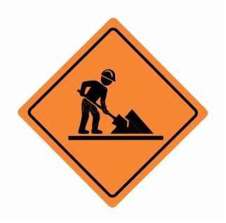

SEÑALES TRANSITORIAS

CAMINO DELINEADO
Indica que en el paso hay montículos de tierra u otro material

EQUIPO PESADO
Indica la existencia de maquinarias en rutas y caminos

HOMBRES TRABAJANDO
Trabajadores situados en el camino

MATERIAL RADIOACTIVO
Indican la presencia de material radioactivo

CONOS
Utilizados generalmente para desviar el transito o crear zonas de exclusión

VALLAS
Utilizadas para separar espacios